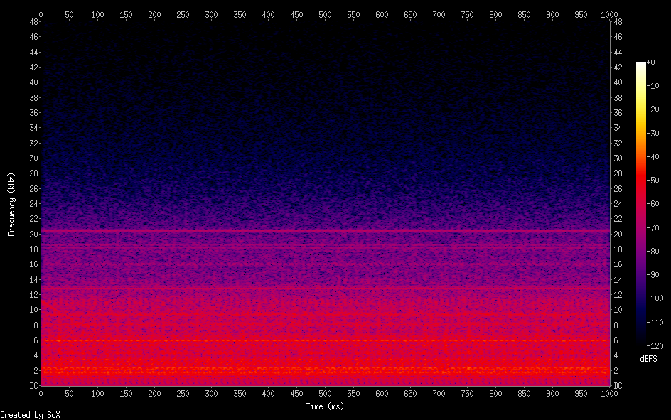

ELFノイズを機械学習してみる
磁気ピックアップでELF・VLF帯域のノイズを記録してみると50Hz商用電源の高調波、特に奇数時の高調波が強烈でした
時間領域でみても10msや20msを周期にしたインパルス状の信号が見てとれます

このノイズをLSTMを使った簡単な学習で予測してみました
モデルは
- hidden layer のサイズが 128 の LSTM が2層と線形層
で学習は
- batch size 40, BPTT 60 で epoch 50
で行いました
学習したものとは別のELFノイズを入力に学習後のモデルでの予測をした結果は

で、簡単なモデルでもある程度ノイズが学習できているように見えます
次にELFノイズに疑似wistler波を加えた信号入力

に対して上で学習したモデルを使って予測を行い、入力と予測の差を取ってみました 
この例では2kHz辺りまでの商用電源高調波由来のノイズが減衰し12kHz超の帯域が少し強調されているように見えますが、詳しく調べれば通常のフィルタなどとは相当違う挙動を示すかもしれません